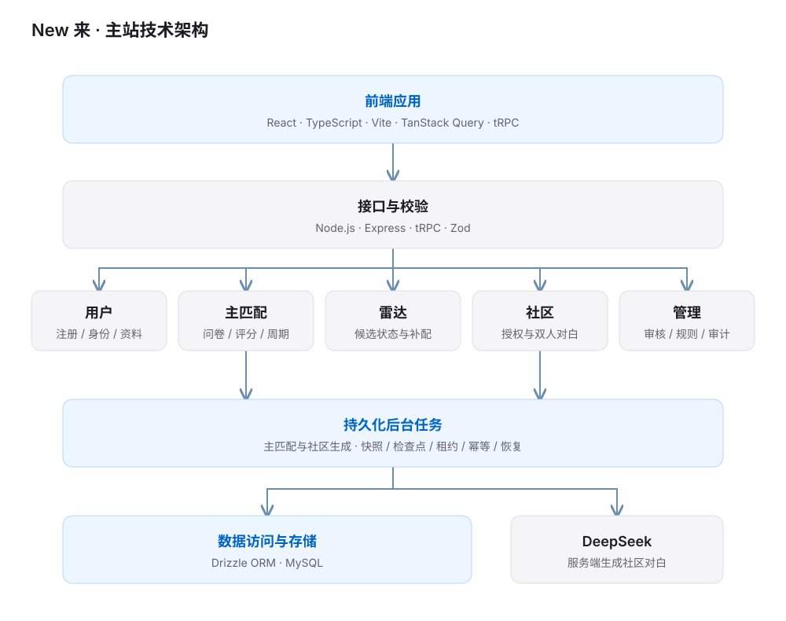

01 / 校园匹配产品的完整交付
New 来（Hseek）校园匹配平台，产品范围包括每周主匹配、雷达补配、AI 分身社区和运营后台。我负责需求拆解、业务规则、前后端实现与部署迭代。
02 / 从身份认证到双方确认
- 注册与审核邮箱注册与学生身份审核。
- 资料与问卷完善个人资料，填写 18 题匹配问卷。
- 每周报名用户主动参加当期主匹配。
- 生成匹配结合兼容度与双方硬性条件生成候选。
- 双方确认展示候选信息，等待双方确认。
- 查看结果双方确认后揭晓联系方式。
把学生审核、候选信息展示、双方确认后揭晓联系方式、拉黑和举报纳入产品流程；社区分身由用户主动授权加入。
信息收集与用户获得的价值对应
我把信息收集分成三个层次：身份审核建立信任，核心问卷支撑匹配，照片与简介帮助双方进一步了解。设计时，先判断一项信息是否影响当前步骤，再说明填写用途，避免把所有资料要求堆到注册入口。
这里的取舍是资料完整度与首次使用成本。问卷需要收集足以支持匹配判断的信息，同时让用户知道还需完成什么、完成后可以参与什么。后续资料补充围绕更好的自我表达展开，让每一步的信息投入都有清晰的用途。
03 / 分场景设计业务规则
| 场景 | 机制 |
|---|---|
| 每周主匹配 | 按周期组织报名与匹配，管理主匹配的候选、确认及结果。 |
| 雷达补配 | 定义主动加入、等待时间、每轮次数、候选期限和失败后回池等规则；独立管理雷达的候选与结果。 |
| AI 分身社区 | 作为独立互动场景，由用户主动授权虚拟角色参与。 |
评分与稳定匹配
以问卷、兴趣和 MBTI 计算兼容度，结合双方硬性条件、历史冷却规则和 Gale–Shapley 稳定匹配生成候选。AI 生成匹配理由作为辅助能力，配对核心由评分与匹配算法承担。
- 候选约束双方硬性条件与历史冷却规则。
- 兼容度评分结合问卷、兴趣与 MBTI。
- 稳定匹配使用 Gale–Shapley 算法生成候选。
先处理输入质量，再讨论匹配权重
兴趣自由文本会同时出现同义表达、不同粒度和补充说明。我的处理原则是区分“表达不同”与“兴趣不同”：统一同义词，保留有意义的细节，对无法确定的内容留出复核空间。
| 输入示例 | 处理思路 |
|---|---|
| 观影 / 看电影 | 映射到“电影”标签，减少同义表达造成的匹配偏差。 |
| 音乐（周杰伦） | 保留“音乐”类别与“周杰伦”细化属性，避免清洗时丢失具体偏好。 |
| 运动 / 篮球 | 保留类别层级，区分宽泛兴趣与具体项目。 |
标签规则需要持续维护：对高频但尚未覆盖的表达抽样复核，再决定新增标签或归入已有类别。清洗后的信息既服务共同兴趣判断，也能帮助运营理解用户关注的内容。
04 / 从前端到数据层
| 层级 | 技术与职责 |
|---|---|
| 前端 | React、TypeScript、Vite、TanStack Query 与 tRPC。 |
| 后端 | Node.js、Express、tRPC、Zod。 |
| 数据层 | Drizzle ORM 与 MySQL。 |
| 业务路由 | 按用户、匹配、雷达、社区和管理功能拆分主站路由。 |
{kind=link}

05 / 长任务可靠性与访问控制
后台任务
主匹配和社区生成使用后台任务处理，具备持久化快照、阶段检查点、租约、幂等请求和失败恢复；长耗时计算不依赖用户请求一直等待。
| 能力 | 作用 |
|---|---|
| 持久化快照与阶段检查点 | 保存任务状态与执行进度，支撑长任务恢复。 |
| 租约与幂等请求 | 管理任务执行权，处理重复请求。 |
| 失败恢复与任务重试 | 对异常任务进行恢复，持续推进后台计算。 |
账号与权限
实现邮箱验证和密码注册、单次令牌、密码散列、会话撤销、请求限流及管理员权限校验。雷达和社区接口按用户授权与数据白名单控制访问。
AI 辅助开发中的产品责任
借助 AI 完成开发时，我先把业务规则写清楚，再拆分数据、服务和任务调度，审查实现计划后推进代码。需要始终成立的约束包括双方条件都满足、主匹配与雷达独立管理结果，以及联系方式仅在双方确认后揭晓。
核心算法与数据操作需要在测试环境中验证，正常路径之外也要覆盖重复请求、任务中断和权限不足。AI 可以加速实现，产品负责人仍需定义验收标准，并确认系统行为与业务规则一致。
06 / 授权参与的双人对白
服务端接入 DeepSeek，为用户授权的虚拟角色生成双人对白；对输入和输出做格式及敏感内容校验，支持任务重试和明确标记的默认对白。
- 用户主动授权用户选择是否加入分身社区。
- 生成与校验服务端调用 DeepSeek，并校验输入、输出的格式及敏感内容。
- 重试与默认对白任务支持重试，默认对白在展示时明确标记。
07 / 支持日常运营与产品迭代
规划并建设运营管理后台，将人工审核、周期管理与异步任务进度纳入同一套操作流程。
- 审核与账号：审核校园卡，管理账号与举报。
- 周期与规则：编辑匹配周期，调整雷达规则。
- 任务与审计：查看匹配、社区任务进度和审计信息。
建立 A/B 测试框架，结合线上点击行为与问卷填写数据，优化匹配问卷体验；通过生产与测试环境隔离支持持续迭代。
用分层指标判断匹配质量
我把匹配质量理解为双方愿意进一步了解，并有机会完成破冰。评估时需要区分平台内可直接观察的行为，以及用户自愿反馈的后续体验。
| 观察层次 | 指标设计 |
|---|---|
| 进入匹配 | 关注问卷完成与周期报名，定位用户在准备阶段的流失。 |
| 双向意愿 | 以匹配对为单位观察双方确认情况，同时查看拒绝与超时。 |
| 后续体验 | 通过自愿反馈了解是否完成破冰、愿不愿继续交流，同时记录反馈参与率。 |
进一步调整价值观或兴趣权重时，我会先写出可验证的假设，明确实验对象、观察周期和成功标准，再结合双向确认与后续反馈判断效果。双方硬性条件必须始终满足；同时关注候选覆盖与等待情况，避免局部指标改善却让更多用户难以获得匹配。
08 / 对白实验室
对白实验室是单独部署的配套工具，与 New 来主站分别部署。